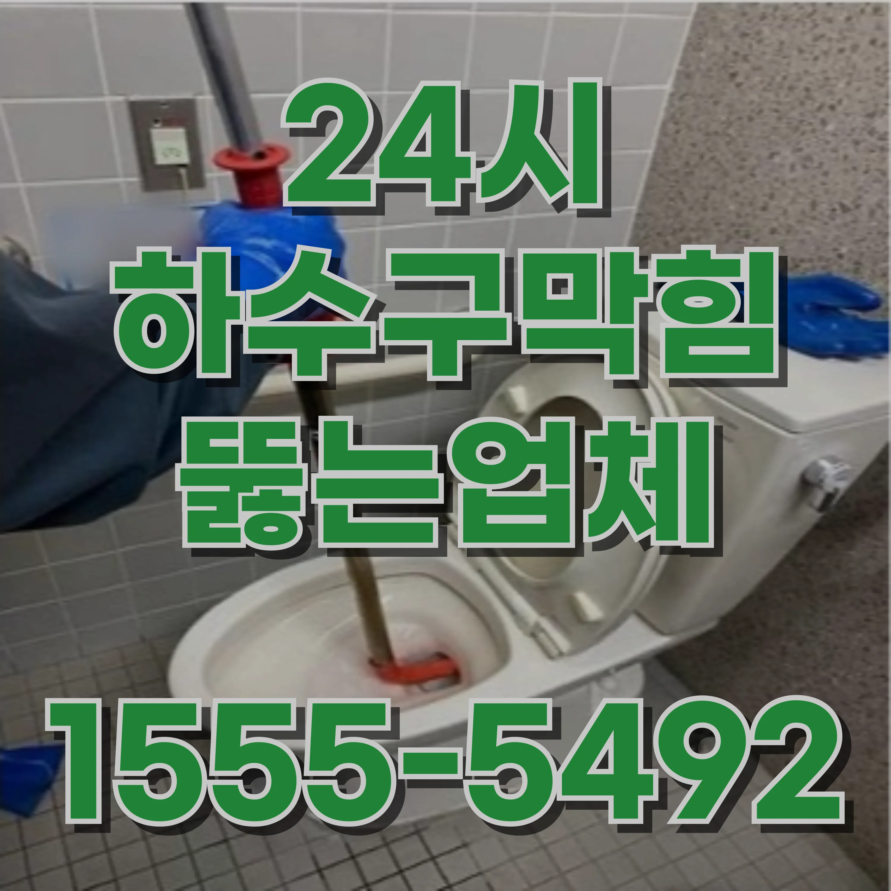

24시간 운영중
월 ~ 일


홍은동 하수구막힘 고압세척 비용 하수구역류 뚫는 업체 추천변기 막힘은 가정에서 자주 발생할 수 있는 문제로, 이로 인한 불편함은 매우 크기 때문에 빠르고 효과적인 해결 방법을 아는 것이 중요합니다. 변기 막힘은 다양한 원인으로 발생할 수 있으며, 이를 해결하는 방법도 여러 가지가 있습니다. 변기 막힘의 주된 원인과 해결 방법을 더욱 자세히 살펴보겠습니다. 변기 막힘의 가장 흔한 원인은 이물질이 배수구에 쌓여서 발생하는 것입니다. 특히 물티슈나 종이컵, 기저귀, 음식물 쓰레기와 같은 물에 잘 녹지 않는 물질은 배수구를 막히게 만들 수 있습니다. 물티슈는 변기에서 분해되지 않고 배수관을 막기 쉬운 물질로, 특히 쓰고 난 뒤 변기나 배수구에 버리면 큰 문제를 일으킬 수 있습니다. 또한, 과도한 양의 화장지를 한 번에 사용하는 것도 변기 막힘의 주요 원인입니다. 변기는 설계된 만큼만 화장지를 처리할 수 있기 때문에 지나치게 많은 양의 화장지를 사용하면 배수구를 막게 됩니다. 이를 예방하려면 적당량의 화장지만 사용하고, 물티슈나 이물질은 반드시 쓰레기통에 버리는 습관을 들여야 합니다. 변기 막힘을 해결하는 가장 일반적인 방법은 플런저(뚫어뻥)를 사용하는 것입니다. 플런저는 변기 배수구에 밀착시켜 위아래로 빠르게 움직이며 압력을 가해 막힌 부분을 뚫어내는 도구입니다. 플런저를 사용할 때에는 배수구에 밀착시켜 공기가 새지 않도록 하고, 위아래로 반복적으로 움직여야 효과적으로 막힘을 해결할 수 있습니다. 이때, 너무 세게 밀거나 과도한 힘을 주면 배수관에 손상을 줄 수 있으므로 조심해야 합니다. 플런저로 변기 막힘이 해결되지 않으면 배수관 스네이크를 사용할 수 있습니다. 배수관 스네이크는 긴 철사 모양의 도구로, 변기 배수구 깊숙이 들어가 이물질을 제거하는 데 사용됩니다. 이 도구는 특히 깊은 곳에서 막힌 부분을 제거할 때 유용합니다. 다만, 배수관 스네이크는 세게 밀거나 무리하게 사용하면 변기나 배관에 손상을 줄 수 있기 때문에 주의가 필요합니다.

홍은동 하수구막힘 고압세척 비용 하수구역류 뚫는 업체 추천변기 막힘을 해결할 때 화학 제품을 사용하는 방법도 있습니다. 시중에는 변기 막힘을 해결할 수 있는 화학 제품들이 여러 가지 있습니다. 이러한 화학 제품은 배수구에 부어 이물질을 분해하거나 녹여 막힘을 해결하는 역할을 합니다. 화학 제품을 사용할 때는 제품 설명서를 읽고 안전 수칙을 지키는 것이 매우 중요합니다. 제품을 사용할 때는 장갑을 착용하고, 충분히 환기가 되는 곳에서 사용하는 것이 좋습니다. 화학 제품을 사용한 후에는 변기의 물이 깨끗하게 내려갈 때까지 충분히 물을 내려야 합니다. 하지만 화학 제품은 장기적으로 사용할 경우 배관에 부담을 줄 수 있으므로, 자주 사용하는 것보다는 필요한 경우에만 사용하고, 대체 방법을 먼저 시도하는 것이 좋습니다.변기 막힘을 예방하려면 올바른 사용 습관을 가지는 것이 중요합니다. 변기에는 화장지 외의 물건을 넣지 않도록 하고, 과도한 양의 화장지를 사용하지 않는 것이 기본입니다. 물티슈나 기저귀, 음식물 쓰레기 등은 변기에서 처리되지 않으며 배수관을 막을 수 있습니다. 또한, 변기 사용 후 물이 고이거나 물이 내려가지 않으면 즉시 점검하고 조치를 취하는 것이 좋습니다. 물이 내려가지 않는다면 배수구나 배관에 이물질이 쌓였을 수 있으므로, 이를 해결하기 위한 조치를 취해야 합니다. 정기적인 배수구 청소와 점검도 변기 막힘 예방에 큰 도움이 됩니다. 배수구에 이물질이 쌓이면 물이 제대로 흐르지 않기 때문에, 주기적으로 청소하고 점검하는 습관을 들이는 것이 중요합니다.


홍은동 하수구막힘 고압세척 비용 하수구역류 뚫는 업체 추천하수구 관리는 가정의 위생과 쾌적한 환경을 유지하는 데 필수적인 요소입니다. 하수구가 막히면 단순히 물이 내려가지 않는 문제를 넘어, 악취와 물의 역류, 배관 손상 등 다양한 문제를 유발할 수 있습니다. 이러한 문제는 가정의 생활 품질을 떨어뜨리고, 추가적인 비용을 발생시킬 수 있습니다.
홍은동 하수구막힘 고압세척 비용 하수구역류 뚫는 업체 추천 하수구 막힘을 예방하고 정기적으로 관리하는 것이 중요합니다. 작은 생활 습관의 변화만으로도 큰 문제를 예방할 수 있으며, 정기적인 점검과 청소를 통해 배관을 깨끗하게 유지할 수 있습니다. 만약 문제가 발생한다면, 빠르게 대처하고 필요한 경우 전문가의 도움을 받아 근본적인 문제를 해결하는 것이 가장 좋은 방법입니다. 홍은동하수구막힘 홍은동 하수구막힘 고압세척 비용 하수구역류 뚫는 업체 추천


| 문제 | 예방법 | 추가 팁 |
|---|---|---|
| 홍은동변기막힘 | 생리대와 물티슈를 변기에 버리지 마세요. | 화장지를 필요한 만큼만 사용하여 막힘을 방지하세요. |
| 홍은동싱크대막힘 | 기름이나 기름기를 싱크대에 버리지 말고 종이타월로 닦아내세요. | 거름망을 사용하여 음식물 찌꺼기가 배수구로 들어가지 않게 하세요. |
| 홍은동하수구막힘 | 머리카락 필터를 설치하고 사용 후 정기적으로 청소하세요. | 배수구에 뜨거운 물을 한 달에 한 번 부어 비누 찌꺼기를 제거하세요. |